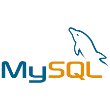
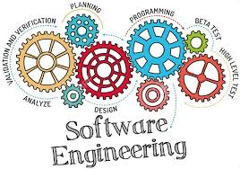
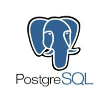
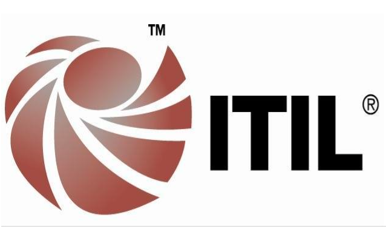

Banco de dados MySql-completo
O MySQL é um dos sistemas de gerenciamento de banco de dados relacional (SGBDR) mais populares e amplamente utilizados no mundo.
Acessar E-bookPhD em Engenharia de Software pelo Centro de Estudos e Sistemas Avançados do Recife - C.E.S.A.R e Docente Colaborador. Analista Judiciário na Justiça Federal (TRF1). Foi Professor Substituto do Departamento de Ciência da Computação na Universidade de Brasília - UNB. Ocupou a Função de Diretor do Núcleo de Operação de Centros da Dados na Justiça Federal- TRF1. Exerceu o cargo de Coordenador-Geral de Sistemas(DAS 101.4) no Ministério do Planejamento, Orçamento e Gestão - MPOG, servidor público ocupando o cargo de Analista em Tecnologia da Informação - ATI. Exerceu o cargo de Chefe da Divisão de Infraestrutura de Redes e Comunicação(DAS 101.2), Chefe da Divisão de Desenvolvimento e Manutenção de Sistemas-interino(DAS 101.2), Assessor da Diretoria de Gestão Estratégica(DAS 102.1), Chefe da Divisão de Suporte Técnico(DAS 101.2) e Coordenador-Geral de Tecnologia da Informação-substituto(DAS 101.4) no Instituto Nacional de Colonização e Reforma Agrária - INCRA. Foi Analista em Desenvolvimento Regional na CODEVASF, tendo exercido a Chefia da Unidade de Sistemas de Informações interinamente. Tem experiência na área de Tecnologia da Informação, atuando principalmente nos seguintes temas: Segurança da Informação, Redes de Computadores, Engenharia de Software, Gestão e Governança de T.I

Principais objetivos da engenharia de software: Qualidade, Eficiência, Manutenibilidade, Confiabilidade e Segurança.
Acessar Curso
O PostgreSQL é um poderoso sistema de banco de dados objeto-relacional de código aberto, conhecido por sua robustez, confiabilidade e vasto conjunto de funcionalidades.
Acessar CursoAprenda as tecnologias mais demandadas pelo mercado.

O MySQL é um dos sistemas de gerenciamento de banco de dados relacional (SGBDR) mais populares e amplamente utilizados no mundo.
Acessar E-book
ITIL é um conjunto de boas práticas para o Gerenciamento de Serviços de TI (GSTI), funcionando como um guia flexível que ajuda as organizações a usar a TI para atingir seus objetivos.
Acessar E-bookO Oracle Database é um SGBDR considerado um dos mais robustos, seguros e completos do mercado, ideal para operações críticas de grandes corporações.
Acessar E-bookBusiness Intelligence é o processo de coletar, organizar e analisar dados para ajudar as empresas a tomar decisões estratégicas mais inteligentes.
Acessar E-bookFocada em criar sistemas com Qualidade, Eficiência, Manutenibilidade, Confiabilidade e Segurança para otimizar tempo e recursos.
Acessar E-bookA disciplina que se dedica a proteger os ativos de informação de uma organização, baseando-se nos pilares de confidencialidade, integridade e disponibilidade.
Acessar CursoConhecido por sua robustez e um vasto conjunto de funcionalidades, é uma das escolhas mais populares para pequenas e grandes aplicações.
Acessar Curso